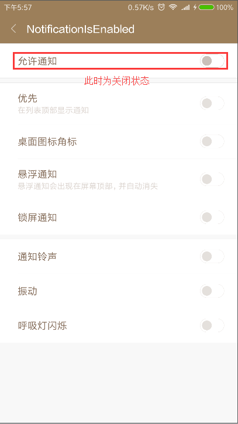
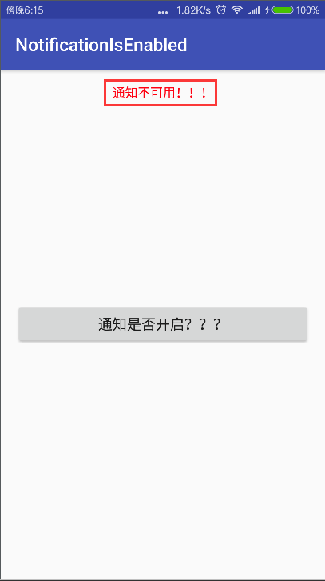
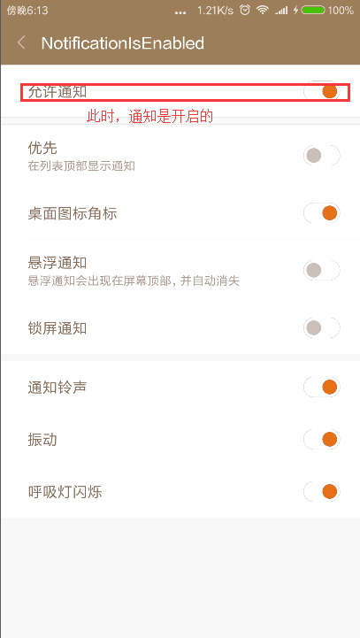
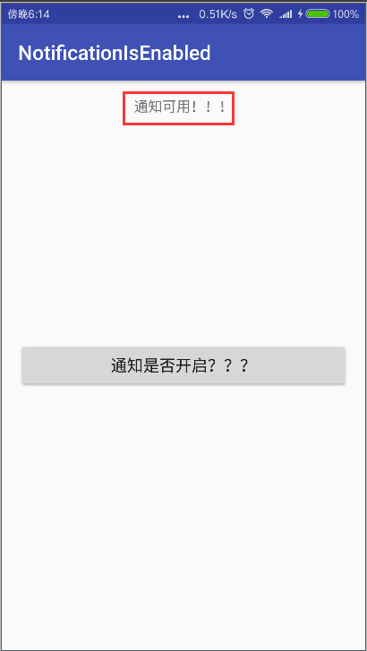

Androidアプリでは、システム通知が有効かどうかの状態を取得する必要がある場合があります。次の操作を行うためです。そのため、状態を取得することは非常に必要です。以前は、適切な方法が見つからず苦労していました。何しろシステムに関わることで、扱いにくいからです。今日、凄い人のアドバイスを見て、試してみたら、とても使いやすかったので、ここに貼って皆さんにも共有します。さあ、このオススメをどうぞ！
証拠の画像があります。まず設定でそのアプリの通知スイッチをオフにします：

次にアプリ内でボタンをクリックして状態を取得します：

このとき、設定に戻って通知ボタンをオンにします：

再度アプリ内のテストボタンをクリックすると、通知が利用可能になっているのが分かります：

コード量はとても少ないですが、非常に簡潔です。ただ一つのツールクラスで、Javaリフレクションの原理を使用しています：
public class NotificationsUtils {
private static final String CHECK_OP_NO_THROW = "checkOpNoThrow";
private static final String OP_POST_NOTIFICATION = "OP_POST_NOTIFICATION";
public static boolean isNotificationEnabled(Context context) {
AppOpsManager mAppOps = (AppOpsManager)
context.getSystemService(Context.APP_OPS_SERVICE);
ApplicationInfo appInfo = context.getApplicationInfo();
String pkg = context.getApplicationContext().getPackageName();
int uid = appInfo.uid;
Class appOpsClass = null; /* Context.APP_OPS_MANAGER */
try {
appOpsClass = Class.forName(AppOpsManager.class.getName());
Method checkOpNoThrowMethod = appOpsClass.getMethod(CHECK_OP_NO_THROW, Integer.TYPE, Integer.TYPE, String.class);
Field opPostNotificationValue = appOpsClass.getDeclaredField(OP_POST_NOTIFICATION);
int value = (int)opPostNotificationValue.get(Integer.class);
return ((int)checkOpNoThrowMethod.invoke(mAppOps,value, uid, pkg) == AppOpsManager.MODE_ALLOWED);
}
catch (ClassNotFoundException e) {
e.printStackTrace();
} catch (NoSuchMethodException e) {
e.printStackTrace();
} catch (NoSuchFieldException e) {
e.printStackTrace();
} catch (InvocationTargetException e) {
e.printStackTrace();
} catch (IllegalAccessException e) {
e.printStackTrace();
}
return false;
}
}
投稿者：チャオ・ウェイウェイ
連絡メール：865397504@qq.com